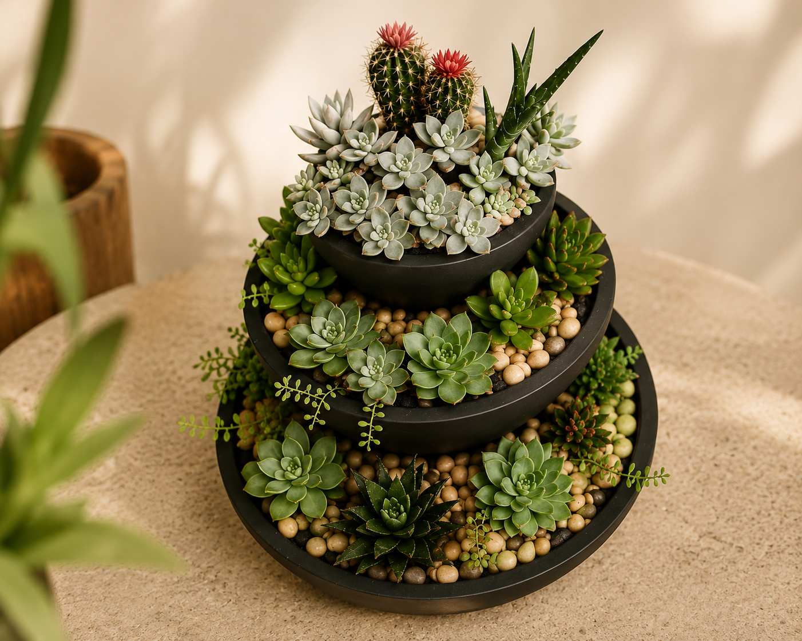

ARRANJOS

Cada arranjo da Cactos & Suculentas da DRY é criado de forma artesanal, combinando suculentas selecionadas, texturas naturais e composições únicas que transformam ambientes com delicadeza e personalidade..
Mais do que decoração, nossos arranjos carregam cuidado, leveza e a beleza da natureza em cada detalhe. Cada peça é exclusiva, pensada para levar vida, aconchego e autenticidade para o seu espaço.
CUIDADOS
Luz Natural: A maioria das suculentas precisa de pelo menos 4 horas de luz solar direta ou indireta forte por dia. Sem luz suficiente, elas ficam "estioladas" (crescem compridas, fracas e perdem o formato). Caso seu arranjo fique dentro de casa, o ideal é deixá-lo perto de janelas que recebam o sol da manhã ou do final da tarde. Caso fiquem estioladas (longas e finas), é sinal de que precisam de mais sol.
Ventilação: Ambientes muito fechados favorecem pragas como as cochonilhas. Garanta que o ar circule onde o arranjo está posicionado.
Rega Controlada: Como armazenam água nas folhas, elas sobrevivem facilmente à seca, mas morrem com o excesso. Regue em média uma vez por semana no verão ou a cada 15 dias no inverno). Verifique se o solo está seco antes de regar novamente.
Como Regar: Aplique água diretamente na terra, evitando molhar as folhas e o centro da planta para prevenir o surgimento de fungos e apodrecimento. Em mini vasos ou arranjos densos, usar uma seringa facilita o processo.
SOBRE

Na Cactos & Suculentas da DRY, cada composição nasce da união entre natureza, arte e exclusividade.
Produzimos arranjos artesanais únicos, com suculentas selecionadas, texturas naturais e vasos cuidadosamente preparados. Cada peça é pensada para levar vida, aconchego e personalidade aos ambientes.
Mais do que decoração, são peças feitas à mão, com atenção aos detalhes e carinho em cada etapa.
CONTATO